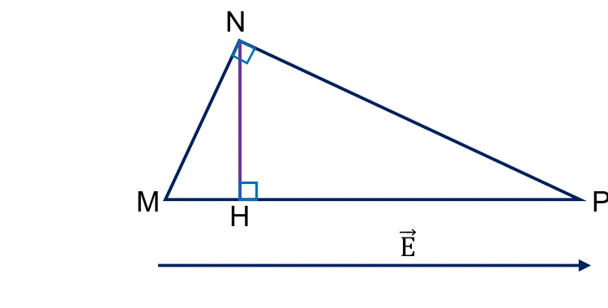
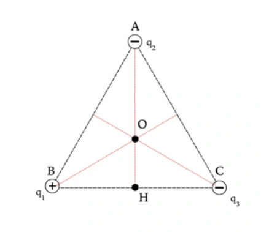
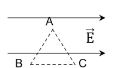
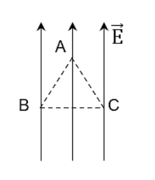

Bài tập — Bài 5 — Công của lực điện, điện thế và hiệu điện thế
Hệ bài tập được biên soạn theo các dạng xuất hiện trong bộ tài liệu Vật lí 11 của dự án. Câu hỏi được giữ ngắn, trực tiếp; độ khó tăng dần và không cố tình thêm dữ kiện gây nhiễu.
Phần A — Trắc nghiệm 4 lựa chọn
Bài 1 — Mức 1 — Nhận biết
Công của lực điện khi điện tích q di chuyển từ M đến N trong điện trường tĩnh có thể viết
A. \(A_{MN}=q(V_M-V_N)\).
B. \(A_{MN}=q(V_N-V_M)\).
C. \(A_{MN}=V_MV_N/q\).
D. \(A_{MN}=q(V_M+V_N)\).
Đáp án và lời giải
Chọn A với quy ước \(U_{MN}=V_M-V_N\).
Bài 2 — Mức 1 — Nhận biết
Đơn vị điện thế là
A. N/C.
B. J/C.
C. C/J.
D. N·m²/C².
Đáp án và lời giải
Chọn B, tên riêng là vôn (V).
Bài 3 — Mức 1 — Nhận biết
Điện tích dương chuyển động tự do theo chiều đường sức điện trong điện trường tĩnh. Điện thế của nó thường
A. tăng.
B. giảm.
C. không đổi.
D. luôn bằng 0.
Đáp án và lời giải
Chọn B: chiều \(\vec E\) là chiều điện thế giảm.
Bài 4 — Mức 1 — Nhận biết
Trong điện trường đều, nếu hai điểm cách nhau d theo đúng chiều điện trường thì
A. \(V_M-V_N=Ed\) khi M ở phía trước theo ngược chiều E và N ở phía sau theo chiều E.
B. hiệu điện thế luôn bằng 0.
C. \(U=E/d\).
D. \(E=Ud\).
Đáp án và lời giải
Chọn A với cách đặt M ở phía điện thế cao hơn và N theo chiều \(\vec E\).
Phần B — Đúng/Sai
Bài 5 — Mức 2 — Thông hiểu
Xét công của lực điện trong điện trường tĩnh:
a) Chỉ phụ thuộc vị trí đầu và cuối, không phụ thuộc đường đi.
b) Trên đường kín, tổng công bằng 0.
c) Nếu q dương đi từ nơi điện thế cao xuống thấp, lực điện thực hiện công dương.
d) Thế năng điện luôn dương.
Đáp án và lời giải
a) Đúng. b) Đúng. c) Đúng vì \(A=q(V_M-V_N)>0\). d) Sai: dấu thế năng phụ thuộc mốc và hệ điện tích.
Bài 6 — Mức 2 — Thông hiểu
Về điện thế và hiệu điện thế:
a) Điện thế là đại lượng vô hướng.
b) Hiệu điện thế \(U_{MN}=V_M-V_N\).
c) \(1\) V = \(1\) J/C.
d) Cường độ điện trường đều có thể tính \(E=U/d\) nếu d là khoảng cách theo phương vuông góc đường sức.
Đáp án và lời giải
a) Đúng. b) Đúng theo quy ước đang dùng. c) Đúng. d) Sai: \(d\) phải là độ dịch chuyển theo phương điện trường giữa hai mặt đẳng thế tương ứng.
Phần C — Trả lời ngắn
Bài 7 — Mức 3 — Vận dụng
Điện tích \(q=2\,\mu\)C đi từ điểm M có điện thế \(120\) V đến N có điện thế \(20\) V. Tính công của lực điện.
Đáp án và lời giải
\(A=q(V_M-V_N)=2\cdot10^{-6}(120-20)=2\cdot10^{-4}\) J.
Bài 8 — Mức 3 — Vận dụng
Hai bản phẳng tạo điện trường đều \(E=2\cdot10^4\) V/m, cách nhau \(5\) mm. Tính hiệu điện thế giữa hai bản.
Đáp án và lời giải
\(U=Ed=2\cdot10^4\cdot5\cdot10^{-3}=100\) V.
Bài 9 — Mức 3 — Vận dụng
Một electron đi qua hiệu điện thế tăng thêm về độ lớn \(200\) V và được gia tốc từ nghỉ. Tính độ tăng động năng theo eV.
Đáp án và lời giải
Độ tăng động năng của electron qua hiệu điện thế 200 V là \(200\) eV. Nếu đổi sang J: \(200\cdot1,6\cdot10^{-19}=3,2\cdot10^{-17}\) J.
Phần D — Vận dụng và vận dụng cao
Bài 10 — Mức 4 — Vận dụng cao
Trong điện trường đều \(E=500\) V/m hướng theo trục Ox dương. Điểm M có tọa độ \(x_M=0,20\) m, điểm N có \(x_N=0,70\) m. Tính \(V_M-V_N\) và công của lực điện khi điện tích \(q=-4\,\mu\)C đi từ M đến N.
Đáp án và lời giải
N nằm theo chiều điện trường so với M, nên điện thế giảm:
\(V_M-V_N=E(x_N-x_M)=500(0,70-0,20)=250\) V.
Công lực điện:
\(A_{MN}=q(V_M-V_N)=-4\cdot10^{-6}\cdot250=-1,0\cdot10^{-3}\) J.
Dấu âm phù hợp: điện tích âm đi theo chiều điện trường thì lực điện hướng ngược chuyển động, nên lực điện thực hiện công âm.
Ngân hàng bài tập mở rộng
Nhận biết — Trả lời ngắn
Bài 11
Dùng dữ kiện sau: Một điện tích điểm \(q=-4\cdot10^{-8}\,\mathrm C\) di chuyển dọc theo các cạnh của tam giác MNP vuông tại N, trong điện trường đều có cường độ \(E=200\,\mathrm{V/m}\). Cạnh \(MP=10\,\mathrm{cm}\), \(\overrightarrow{MP}\) cùng hướng với \(\vec E\); \(NP=8\,\mathrm{cm}\). Môi trường là không khí.
Tính công của lực điện (theo đơn vị \(10^{-7}\,\mathrm J\)) khi điện tích di chuyển từ M đến N.

Đáp án và lời giải
Đáp án: \(-2{,}9\)
Hướng dẫn giải:
\(A_{MN}=qEd_{MN}=qE\,MH\).
Tam giác MNP vuông tại N nên \(MP\) là cạnh huyền: \(MN^2=MP^2-NP^2=10^2-8^2=36\), suy ra \(MN=6\,\mathrm{cm}\). Với đường cao \(NH\) xuống \(MP\), hệ thức lượng cho \(MH=\dfrac{MN^2}{MP}=\dfrac{6^2}{10}=3{,}6\,\mathrm{cm}=0{,}036\,\mathrm m\).
Do đó \(A_{MN}=(-4\cdot10^{-8})\cdot200\cdot0{,}036\approx-2{,}9\cdot10^{-7}\,\mathrm J\).
Đối chiếu nguồn: Phần chữ của PDF ghi nhầm “vuông tại P”, nhưng hình nguồn đánh dấu góc vuông tại N và chính lời giải nguồn dùng \(MP\) làm cạnh huyền, \(MN^2=MP^2-NP^2\). Vì hình và phép giải cùng nhất quán, đây là lỗi chữ nguồn đã xác định; đề được hiệu đính thành “vuông tại N”.
Bài 12
Dùng dữ kiện sau: Một điện tích điểm \(q=-4\cdot10^{-8}\,\mathrm C\) di chuyển dọc theo các cạnh của tam giác MNP vuông tại N, trong điện trường đều có cường độ \(E=200\,\mathrm{V/m}\). Cạnh \(MP=10\,\mathrm{cm}\), \(\overrightarrow{MP}\) cùng hướng với \(\vec E\); \(NP=8\,\mathrm{cm}\). Môi trường là không khí.
Tính công của lực điện (theo đơn vị \(10^{-7}\,\mathrm J\)) khi điện tích di chuyển từ P đến N.
Đáp án và lời giải
Đáp án: \(5{,}12\)
Hướng dẫn giải:
Từ Bài 11, \(MH=3{,}6\,\mathrm{cm}\) nên \(PH=MP-MH=6{,}4\,\mathrm{cm}=0{,}064\,\mathrm m\).
Khi đi từ P đến N, hình chiếu độ dời lên chiều \(\vec E\) là \(d_{PN}=-PH=-0{,}064\,\mathrm m\). Vì vậy \(A_{PN}=qEd_{PN}=(-4\cdot10^{-8})\cdot200\cdot(-0{,}064)=5{,}12\cdot10^{-7}\,\mathrm J\).
Đối chiếu nguồn: Cùng dữ kiện với Bài 11, phần chữ PDF ghi “vuông tại P” nhưng hình và toàn bộ phép giải nguồn xác định góc vuông ở N. Do đó hiệu đính “vuông tại N” là xác định được, không cần suy đoán.
Bài 13
Dùng dữ kiện sau: Một điện tích điểm \(q=-4\cdot10^{-8}\,\mathrm C\) di chuyển dọc theo các cạnh của tam giác MNP vuông tại N, trong điện trường đều có cường độ \(E=200\,\mathrm{V/m}\). Cạnh \(MP=10\,\mathrm{cm}\), \(\overrightarrow{MP}\) cùng hướng với \(\vec E\); \(NP=8\,\mathrm{cm}\). Môi trường là không khí.
Tính công của lực điện (theo đơn vị \(10^{-7}\,\mathrm J\)) khi điện tích di chuyển theo đường kín MNPM.
Đáp án và lời giải
Đáp án: \(0\)
Hướng dẫn giải:
Lực điện là lực thế nên công trên một đường kín bằng 0: \(A_{MNPM}=qE\,d_{MNPM}=0\), vì điểm đầu và điểm cuối đều là M.
Bài 14
Một tụ điện phẳng có hai cực làm bằng kim loại, cách nhau 2 cm. Cường độ điện trường giữa hai bản tụ là \(E=10^5\,\mathrm{V/m}\). Một điện tích \(q=2\cdot10^{-5}\,\mathrm C\) đặt tại điểm M, nằm giữa hai bản tụ và cách bản âm 1,5 cm. Chọn bản âm của tụ làm mốc thế năng điện. Xác định thế năng của điện tích q tại M.
Đáp án và lời giải
Đáp án: \(0{,}03\)
Hướng dẫn giải: Chọn bản âm làm mốc thế năng, \(d=1{,}5\,\mathrm{cm}=1{,}5\cdot10^{-2}\,\mathrm m\). \(W_M=qEd=2\cdot10^{-5}\cdot10^5\cdot1{,}5\cdot10^{-2}=0{,}03\,\mathrm J\).
Bài 15
Một tụ điện phẳng có hai cực làm bằng kim loại, cách nhau 2 cm. Cường độ điện trường giữa hai bản tụ là \(E=10^5\,\mathrm{V/m}\). Một điện tích \(q=2\cdot10^{-5}\,\mathrm C\) đặt tại điểm A, nằm giữa hai bản tụ và cách bản dương 1,5 cm. Chọn bản âm của tụ làm mốc thế năng điện. Xác định thế năng của điện tích q tại A.
Đáp án và lời giải
Đáp án: \(0{,}01\)
Hướng dẫn giải: Khoảng cách từ A đến bản âm là \(d=(2-1{,}5)\,\mathrm{cm}=5\cdot10^{-3}\,\mathrm m\). \(W_A=qEd=2\cdot10^{-5}\cdot10^5\cdot5\cdot10^{-3}=0{,}01\,\mathrm J\).
Bài 16
Một điện trường đều có cường độ \(2500\,\mathrm{V/m}\). Tính công của lực điện trường thực hiện một điện tích q khi nó di chuyển từ A đến B ngược chiều đường sức (theo đơn vị \(10^{-4}\,\mathrm J\)). Biết \(AB=5\,\mathrm{cm}\), \(q=-10^{-6}\,\mathrm C\).
Đáp án và lời giải
Đáp án: \(1{,}25\)
Hướng dẫn giải: Vì \(\overrightarrow{AB}\) ngược chiều \(\vec E\) nên \(d_{AB}=-0{,}05\,\mathrm m\). \(A_{AB}=qEd_{AB}=(-10^{-6})\cdot2500\cdot(-0{,}05)=1{,}25\cdot10^{-4}\,\mathrm J\). Vậy kết quả theo đơn vị \(10^{-4}\,\mathrm J\) là \(1{,}25\).
Bài 17
Một điện trường đều cường độ \(4000\,\mathrm{V/m}\), có phương song song với cạnh huyền BC của một tam giác vuông ABC có chiều từ B đến C, biết \(AB=6\,\mathrm{cm}\), \(AC=8\,\mathrm{cm}\). Công của lực điện tác dụng lên điện tích \(q=10\,\mathrm{nC}\) khi di chuyển từ điểm A đến điểm C bằng bao nhiêu \(10^{-6}\,\mathrm J\)?
Đáp án và lời giải
Đáp án: \(2{,}56\)
Hướng dẫn giải: Tam giác vuông có \(BC=10\,\mathrm{cm}\) và hình chiếu của \(AC\) lên \(BC\) là \(HC=AC\cos C=\dfrac{AC^2}{BC}=\dfrac{8^2}{10}=6{,}4\,\mathrm{cm}=0{,}064\,\mathrm m\). \(A_{AC}=qEHC=10\cdot10^{-9}\cdot4000\cdot0{,}064=2{,}56\cdot10^{-6}\,\mathrm J\).
Bài 18
Một điện tích điểm \(q=4\cdot10^{-8}\,\mathrm C\) di chuyển dọc theo các cạnh của tam giác ABC, vuông tại A, trong điện trường đều có cường độ \(100\,\mathrm{V/m}\). Cạnh \(AB=6\,\mathrm{cm}\), \(\overrightarrow{BC}\) cùng hướng \(\vec E\); \(AC=8\,\mathrm{cm}\). Môi trường là không khí. Tính công của lực điện (theo đơn vị \(10^{-7}\,\mathrm J\)) khi điện tích di chuyển từ A đến C.
Đáp án và lời giải
Đáp án: \(2{,}56\)
Hướng dẫn giải: Với \(BC=10\,\mathrm{cm}\), hình chiếu của \(AC\) lên phương điện trường là \(HC=\dfrac{AC^2}{BC}=6{,}4\,\mathrm{cm}=0{,}064\,\mathrm m\). \(A_{AC}=qEHC=4\cdot10^{-8}\cdot100\cdot0{,}064=2{,}56\cdot10^{-7}\,\mathrm J\). Vậy kết quả theo đơn vị \(10^{-7}\,\mathrm J\) là \(2{,}56\).
Bài 19
Một tụ điện phẳng có hai cực làm bằng kim loại, cách nhau 2 cm. Cường độ điện trường giữa hai bản tụ là \(E=10^6\,\mathrm{V/m}\). Một điện tích \(q=-2\cdot10^{-5}\,\mathrm C\) đặt tại điểm M, nằm giữa hai bản tụ và cách bản âm 1,5 cm. Chọn bản âm của tụ làm mốc thế năng điện. Xác định thế năng của điện tích q tại M.
Đáp án và lời giải
Đáp án: \(-0{,}3\)
Hướng dẫn giải: Chọn bản âm làm mốc thế năng, \(d=1{,}5\,\mathrm{cm}=1{,}5\cdot10^{-2}\,\mathrm m\). \(W_M=qEd=-2\cdot10^{-5}\cdot10^6\cdot1{,}5\cdot10^{-2}=-0{,}3\,\mathrm J\).
Bài 20
Công mà lực điện sinh ra khi dịch chuyển điện tích \(1{,}6\cdot10^{-6}\,\mathrm C\) từ điểm M đến điểm N là bao nhiêu mJ? Biết hiệu điện thế \(U_{MN}=50\,\mathrm V\).
Đáp án và lời giải
Đáp án: \(0{,}08\)
Hướng dẫn giải: \(A_{MN}=U_{MN}q=50\cdot1{,}6\cdot10^{-6}=8\cdot10^{-5}\,\mathrm J=0{,}08\,\mathrm{mJ}\).
Đối chiếu nguồn: PDF ghi \(80\,\mathrm{mJ}\), nhưng giá trị này không khớp phép nhân \(50\cdot1{,}6\cdot10^{-6}\,\mathrm J\).
Bài 21
Ta cần thực hiện một công \(1{,}3\cdot10^{-4}\,\mathrm J\) để dịch chuyển điện tích \(2{,}6\cdot10^{-6}\,\mathrm C\) từ vô cực đến điểm M. Chọn gốc điện thế tại vô cực. Điện thế tại M bằng bao nhiêu V ?
Đáp án và lời giải
Đáp án: \(50\)
Hướng dẫn giải: \(A=qV_M\Rightarrow V_M=\dfrac{A}{q}=\dfrac{1{,}3\cdot10^{-4}}{2{,}6\cdot10^{-6}}=50\,\mathrm V\).
Bài 22
Hai điểm trên một đường sức trong một điện trường đều cách nhau \(60\,\mathrm{cm}\). Độ lớn cường độ điện trường là \(250\,\mathrm{V/m}\). Hiệu điện thế giữa hai điểm đó bằng bao nhiêu V ?
Đáp án và lời giải
Đáp án: \(150\)
Hướng dẫn giải: \(U=Ed=250\cdot0{,}6=150\,\mathrm V\).
Bài 23
Một điện trường đều cường độ \(4000\,\mathrm{V/m}\), có phương song song với cạnh huyền BC của một tam giác vuông ABC có chiều từ B đến C, biết \(AB=6\,\mathrm{cm}\); \(AC=8\,\mathrm{cm}\). Hiệu điện thế giữa hai điểm B và A bằng bao nhiêu V ?
Đáp án và lời giải
Đáp án: \(144\)
Hướng dẫn giải: Với tam giác vuông \(6-8-10\), \(BH=\dfrac{AB^2}{BC}=\dfrac{0{,}06^2}{0{,}10}=0{,}036\,\mathrm m\). \(U_{BA}=EBH=4000\cdot0{,}036=144\,\mathrm V\).
Bài 24
Giả thiết rằng trong một tia sét có một điện tích \(q=25\,\mathrm C\) được phóng ra từ đám mây và mặt đất có \(U=1{,}4\cdot10^{8}\,\mathrm V\). Cho biết nhiệt hóa hơi của nước bằng \(3\cdot10^{6}\,\mathrm{J/kg}\), năng lượng của tia sét này có thể làm bao nhiêu kg nước ở 100°C bốc thành hơi ở 100°C?
Đáp án và lời giải
Đáp án: \(1167\)
Hướng dẫn giải: Năng lượng của tia sét theo nguồn: \(A=Uq=1{,}4\cdot10^8\cdot25=3{,}5\cdot10^9\,\mathrm J\). Với \(L=3\cdot10^6\,\mathrm{J/kg}\), \(m=\dfrac{A}{L}=\dfrac{3{,}5\cdot10^9}{3\cdot10^6}=1167\,\mathrm{kg}\).
Bài 25
Hiệu điện thế giữa hai điểm M, N là \(U_{MN}=4\,\mathrm V\). Một điện tích \(q=-2\,\mathrm C\) di chuyển từ M đến N thì công của lực điện trường là bao nhiêu ?
Đáp án và lời giải
Đáp án: \(-8\)
Hướng dẫn giải: \(A=qU_{MN}=(-2)\cdot4=-8\,\mathrm J\).
Đối chiếu nguồn: PDF ghi đơn vị \(\mathrm V\) ở kết quả công; đơn vị đúng của công là \(\mathrm J\).
Bài 26
Ta cần thực hiện một công \(8\cdot10^{-2}\,\mathrm J\) để dịch chuyển điện tích \(0{,}16\,\mathrm C\) từ vô cực đến điểm B. Chọn gốc điện thế tại vô cực. Điện thế tại B là bao nhiêu ?
Đáp án và lời giải
Đáp án: \(0{,}5\)
Hướng dẫn giải: \(A_{\infty B}=qV_B\Rightarrow V_B=\dfrac{A_{\infty B}}{q}=\dfrac{8\cdot10^{-2}}{0{,}16}=0{,}5\,\mathrm V\).
Bài 27
Hai điểm trên một đường sức trong một điện trường đều cách nhau \(0{,}5\,\mathrm m\). Độ lớn cường độ điện trường là \(1000\,\mathrm{V/m}\). Hiệu điện thế giữa hai điểm đó là
Đáp án và lời giải
Đáp án: \(500\)
Hướng dẫn giải: \(U=Ed=1000\cdot0{,}5=500\,\mathrm V\).
Nhận biết — Trắc nghiệm 4 lựa chọn
Bài 28
Công của lực điện có đơn vị là
A. vôn (V).
B. jun (J).
C. vôn trên mét (V/m).
D. oát (W).
Đáp án và lời giải
Đáp án: B Hướng dẫn giải:
Dùng \(A_{MN}=q(V_M-V_N)=qU_{MN}\); trong điện trường đều, nếu độ dời theo phương điện trường là \(d\) thì \(A=qEd\).
Đối chiếu kết quả với các lựa chọn, phương án phù hợp là B. jun (J).
Bài 29
Công thức tính công của lực điện tác dụng lên một điện tích \(q\) di chuyển trong điện trường đều là \(A=qEd\). Chỉ ra khẳng định không đúng khi nói về độ lớn của \(d\).
A. \(d\) là chiều dài hình chiếu của đường đi trên một đường sức.
B. \(d\) là khoảng cách giữa hình chiếu của điểm đầu và điểm cuối của đường đi trên một đường sức.
C. \(d\) là chiều dài đường đi nếu điện tích dịch chuyển dọc theo một đường sức.
D. \(d\) là chiều dài của đường đi.
Đáp án và lời giải
Đáp án: D Hướng dẫn giải:
Dùng \(A_{MN}=q(V_M-V_N)=qU_{MN}\); trong điện trường đều, nếu độ dời theo phương điện trường là \(d\) thì \(A=qEd\).
Đối chiếu kết quả với các lựa chọn, phương án phù hợp là D. d là chiều dài của đường đi.
Bài 30
Nếu chiều dài đường đi của điện tích trong điện trường tăng 2 lần thì công của lực điện trường
A. chưa đủ dữ kiện để xác định.
B. tăng 2 lần.
C. giảm 2 lần.
D. không thay đổi.
Đáp án và lời giải
Đáp án: A
Hướng dẫn giải: Trong điện trường đều, \(A_{MN}=qEd\), với \(d\) là độ dài đại số hình chiếu của độ dời lên phương điện trường. Chỉ biết chiều dài đường đi tăng chưa đủ để xác định \(d\), nên chưa đủ dữ kiện.
Bài 31
Một điện tích điểm di chuyển dọc theo đường sức của một điện trường đều có cường độ điện trường \(E=1000\,\mathrm{V/m}\), đi được một khoảng \(d=5\,\mathrm{cm}\). Lực điện trường thực hiện được công \(A=-15\cdot10^{-5}\,\mathrm J\). Độ lớn của điện tích đó là
A. \(5\cdot10^{-6}\,\mathrm C\).
B. \(15\cdot10^{-6}\,\mathrm C\).
C. \(3\cdot10^{-6}\,\mathrm C\).
D. \(3\cdot10^{-5}\,\mathrm C\).
Đáp án và lời giải
Đáp án: C
Hướng dẫn giải: \(|q|=\dfrac{|A|}{Ed}=\dfrac{15\cdot10^{-5}}{1000\cdot0{,}05}=3\cdot10^{-6}\,\mathrm C\).
Bài 32
Phát biểu đúng về mối quan hệ giữa công của lực điện và thế năng tĩnh điện là
A. công của lực điện cũng là thế năng tĩnh điện.
B. công của lực điện là số đo độ biến thiên thế năng tĩnh điện.
C. lực điện thực hiện công dương thì thế năng tĩnh điện tăng.
D. lực điện thực hiện công âm thì thế năng tĩnh điện giảm.
Đáp án và lời giải
Đáp án: B Hướng dẫn giải:
Dùng \(A_{MN}=q(V_M-V_N)=qU_{MN}\); trong điện trường đều, nếu độ dời theo phương điện trường là \(d\) thì \(A=qEd\).
Đối chiếu kết quả với các lựa chọn, phương án phù hợp là B. công của lực điện là số đo độ biến thiên thế năng tĩnh điện.
Bài 33
Công của lực điện làm dịch chuyển một điện tích \(10\,\mathrm{mC}\) theo phương song song với các đường sức trong một điện trường đều với quãng đường \(1\,\mathrm{cm}\) là \(1\,\mathrm J\). Độ lớn cường độ điện trường đó bằng
A. \(10000\,\mathrm{V/m}\).
B. \(1\,\mathrm{V/m}\).
C. \(100\,\mathrm{V/m}\).
D. \(1000\,\mathrm{V/m}\).
Đáp án và lời giải
Đáp án: A Hướng dẫn giải:
Dùng \(A_{MN}=q(V_M-V_N)=qU_{MN}\); trong điện trường đều, nếu độ dời theo phương điện trường là \(d\) thì \(A=qEd\).
\(E=\dfrac{A}{qd}=\dfrac{1}{10\cdot10^{-3}\cdot0{,}01}=10000\,\mathrm{V/m}\).
Đối chiếu kết quả với các lựa chọn, phương án phù hợp là A. \(10000\,\mathrm{V/m}\).
Bài 34
Công thức xác định công của lực điện trường làm dịch chuyển điện tích \(q\) trong điện trường đều là \(A=qEd\), trong đó \(d\) là
A. khoảng cách giữa điểm đầu và điểm cuối.
B. khoảng cách giữa hình chiếu điểm đầu và hình chiếu điểm cuối lên một đường sức.
C. độ dài đại số của đoạn từ hình chiếu điểm đầu đến hình chiếu điểm cuối lên một đường sức, tính theo chiều đường sức điện.
D. độ dài đại số của đoạn từ hình chiếu điểm đầu đến hình chiếu điểm cuối lên một đường sức.
Đáp án và lời giải
Đáp án: C Hướng dẫn giải:
Dùng \(A_{MN}=q(V_M-V_N)=qU_{MN}\); trong điện trường đều, nếu độ dời theo phương điện trường là \(d\) thì \(A=qEd\).
Đối chiếu kết quả với các lựa chọn, phương án phù hợp là C. độ dài đại số của đoạn từ hình chiếu điểm đầu đến hình chiếu điểm cuối lên một đường sức, tính theo chiều đường sức điện.
Bài 35
Phát biểu nào sau đây là sai?
A. Thế năng của điện tích \(q\) đặt tại điểm M trong điện trường đặc trưng cho khả năng sinh công của điện trường tại điểm đó.
B. Trong điện trường đều, sau khi chọn mốc thế năng phù hợp, thế năng của điện tích \(q\) tại M có thể viết \(W_M=qEd\), với \(d\) là khoảng cách đại số theo phương đường sức từ M đến mặt mốc.
C. Công của lực điện bằng độ giảm thế năng của điện tích trong điện trường.
D. Thế năng của điện tích \(q\) đặt tại điểm M trong điện trường không phụ thuộc điện tích \(q\).
Đáp án và lời giải
Đáp án: D.
Hướng dẫn giải: Hệ thức tổng quát là \(W_M=qV_M\), nên thế năng phụ thuộc điện tích thử \(q\); vì vậy D sai.
Trong điện trường đều, với mốc phù hợp có \(V_M=Ed\), nên \(W_M=qEd\); B đúng trong điều kiện đã nêu. Công của lực điện thỏa \(A_{MN}=W_M-W_N\), nên C đúng.
Đối chiếu nguồn
PDF viết B theo dạng \(W_M=qEd\) nhưng bỏ điều kiện “điện trường đều” và không nhắc lại ý nghĩa của \(d\). Ngay câu 12 liền trước trên cùng trang xác định \(A=qEd\) cho điện trường đều và định nghĩa \(d\) là độ dài đại số theo chiều đường sức. Bản learner-facing bổ sung đúng điều kiện ngữ cảnh đó để câu có một đáp án sai duy nhất là D.
Thông hiểu — Trắc nghiệm 4 lựa chọn
Bài 36
Một điện tích \(q\) di chuyển trong điện trường từ A đến B thì lực điện sinh công \(A=2{,}5\,\mathrm J\). Biết thế năng của \(q\) tại B là \(3{,}75\,\mathrm J\). Thế năng của nó tại A bằng
A. \(6{,}25\,\mathrm J\).
B. \(1{,}25\,\mathrm J\).
C. \(-6{,}25\,\mathrm J\).
D. \(-1{,}25\,\mathrm J\).
Đáp án và lời giải
Đáp án: A
Hướng dẫn giải: \(A_{AB}=W_A-W_B\Rightarrow W_A=A_{AB}+W_B=2{,}5+3{,}75=6{,}25\,\mathrm J\).
Bài 37
Cho điện tích dịch chuyển giữa hai điểm cố định trong một điện trường đều với cường độ \(150\,\mathrm{V/m}\) thì công của lực điện trường là \(90\,\mathrm{mJ}\). Nếu cường độ điện trường là \(200\,\mathrm{V/m}\) thì công của lực điện trường dịch chuyển điện tích giữa hai điểm đó là
A. \(120\,\mathrm J\).
B. \(40\,\mathrm J\).
C. \(40\,\mathrm{mJ}\).
D. \(120\,\mathrm{mJ}\).
Đáp án và lời giải
Đáp án: D
Hướng dẫn giải: Với cùng điện tích và cùng hai điểm, \(A\propto E\): \(A_2=A_1\dfrac{E_2}{E_1}=90\dfrac{200}{150}=120\,\mathrm{mJ}\).
Bài 38
Cho điện tích \(10^{-8}\,\mathrm C\) dịch chuyển giữa hai điểm cố định trong một điện trường đều thì công của lực điện trường là \(80\,\mathrm{mJ}\). Nếu một điện tích \(4\cdot10^{-9}\,\mathrm C\) dịch chuyển giữa hai điểm đó thì công của lực điện trường khi đó là
A. \(32\,\mathrm{mJ}\).
B. \(20\,\mathrm{mJ}\).
C. \(240\,\mathrm{mJ}\).
D. \(320\,\mathrm{mJ}\).
Đáp án và lời giải
Đáp án: A
Hướng dẫn giải: Với cùng điện trường và hai điểm, \(A\propto q\): \(A_2=A_1\dfrac{q_2}{q_1}=80\dfrac{4\cdot10^{-9}}{10^{-8}}=32\,\mathrm{mJ}\).
Vận dụng — Trắc nghiệm 4 lựa chọn
Bài 39
Một điện tích \(q=4\cdot10^{-8}\,\mathrm C\) di chuyển trong một điện trường đều có cường độ \(E=100\,\mathrm{V/m}\), theo đường gấp khúc ABC. Đoạn \(AB=20\,\mathrm{cm}\), \(\overrightarrow{AB}\) hợp với \(\vec E\) một góc \(60^\circ\); đoạn \(BC=40\,\mathrm{cm}\), \(\overrightarrow{BC}\) hợp với \(\vec E\) một góc \(120^\circ\). Công của lực điện bằng
A. \(4\cdot10^{-7}\,\mathrm J\).
B. \(-8\cdot10^{-7}\,\mathrm J\).
C. \(-4\cdot10^{-7}\,\mathrm J\).
D. \(12\cdot10^{-7}\,\mathrm J\).
Đáp án và lời giải
Đáp án: C
Hướng dẫn giải: \(A_{AB}=qE\,AB\cos60^\circ=4\cdot10^{-8}\cdot100\cdot0{,}2\cdot\cos60^\circ=4\cdot10^{-7}\,\mathrm J\). \(A_{BC}=qE\,BC\cos120^\circ=4\cdot10^{-8}\cdot100\cdot0{,}4\cdot\cos120^\circ=-8\cdot10^{-7}\,\mathrm J\). \(A_{ABC}=A_{AB}+A_{BC}=-4\cdot10^{-7}\,\mathrm J\).
Bài 40
Một proton bay theo phương của một đường sức điện trường. Lúc ở điểm A nó có tốc độ \(2{,}5\cdot10^{4}\,\mathrm{m/s}\), khi đến điểm B tốc độ của nó bằng không. Biết proton có khối lượng \(1{,}67\cdot10^{-27}\,\mathrm{kg}\). Thế năng điện tại A bằng \(8\cdot10^{-17}\,\mathrm J\). Thế năng điện tại B bằng
A. \(-8{,}5\cdot10^{-17}\,\mathrm J\).
B. \(-8\cdot10^{-17}\,\mathrm J\).
C. \(8{,}1\cdot10^{-17}\,\mathrm J\).
D. \(8{,}5\cdot10^{-17}\,\mathrm J\).
Đáp án và lời giải
Đáp án: C
Hướng dẫn giải: Bảo toàn cơ năng điện: \(W_A+W_{\mathrm{đ}A}=W_B+W_{\mathrm{đ}B}\). Vì \(v_B=0\), \(W_B=W_A+\dfrac12mv_A^2=8\cdot10^{-17}+\dfrac12\cdot1{,}67\cdot10^{-27}\cdot(2{,}5\cdot10^4)^2\approx8{,}1\cdot10^{-17}\,\mathrm J\).
Nhận biết — Trắc nghiệm 4 lựa chọn
Bài 41
Công của lực điện tác dụng lên một điện tích điểm q khi di chuyển từ điểm M đến điểm N trong một điện trường, thì không phụ thuộc vào
A. vị trí của các điểm M, N.
B. hình dạng của đường đi MN.
C. độ lớn của điện tích q.
D. độ lớn của cường độ điện trường tại các điểm trên đường đi.
Đáp án và lời giải
Đáp án: B Hướng dẫn giải:
Dùng \(A_{MN}=q(V_M-V_N)=qU_{MN}\); trong điện trường đều, nếu độ dời theo phương điện trường là \(d\) thì \(A=qEd\).
Đối chiếu kết quả với các lựa chọn, phương án phù hợp là B. hình dạng của đường đi MN.
Bài 42
Thế năng của điện tích trong điện trường đặc trưng cho
A. tốc độ sinh công của điện trường để dịch chuyển điện tích q từ điểm đó ra xa vô cùng.
B. phương, chiều của cường độ điện trường.
C. khả năng sinh công của điện trường để dịch chuyển điện tích q từ điểm đó ra xa vô cùng.
D. độ lớn nhỏ của vùng không gian có điện trường.
Đáp án và lời giải
Đáp án: C Hướng dẫn giải:
Dùng \(A_{MN}=q(V_M-V_N)=qU_{MN}\); trong điện trường đều, nếu độ dời theo phương điện trường là \(d\) thì \(A=qEd\).
Đối chiếu kết quả với các lựa chọn, phương án phù hợp là C. khả năng sinh công của điện trường để dịch chuyển điện tích q từ điểm đó ra xa vô cùng.
Bài 43
Nếu điện tích dịch chuyển trong điện trường đều sao cho thế năng của nó tăng thì công của của lực điện trường
A. âm.
B. dương.
C. bằng không.
D. chưa đủ dữ kiện để xác định.
Đáp án và lời giải
Đáp án: A
Hướng dẫn giải: \(A_{MN}=W_M-W_N\). Nếu thế năng tăng thì \(W_N>W_M\), do đó \(A_{MN}<0\).
Bài 44
Cho điện tích dịch chuyển giữa hai điểm cố định trong một điện trường đều với cường độ \(150\,\mathrm{V/m}\) thì công của lực điện trường là \(90\,\mathrm{mJ}\). Nếu cường độ điện trường là \(100\,\mathrm{V/m}\) thì công của lực điện trường dịch chuyển điện tích giữa hai điểm đó là
A. \(120\,\mathrm J\).
B. \(60\,\mathrm J\).
C. \(60\,\mathrm{mJ}\).
D. \(120\,\mathrm{mJ}\).
Đáp án và lời giải
Đáp án: C
Hướng dẫn giải: Với cùng điện tích và cùng hai điểm, \(A\propto E\): \(A_2=90\dfrac{100}{150}=60\,\mathrm{mJ}\).
Bài 45
\(Q\) là một điện tích điểm âm đặt tại điểm O. M và N là hai điểm nằm trong điện trường của \(Q\) với \(OM=20\,\mathrm{cm}\) và \(ON=10\,\mathrm{cm}\). Đặt tại M, N một điện tích \(q\) thử (\(q>0\)). Chỉ ra bất đẳng thức đúng? Chọn mốc thế năng ở vô cực.
A. \(W_M<W_N<0\).
B. \(W_N<W_M<0\).
C. \(W_M>W_N>0\).
D. \(W_N>W_M>0\).
Đáp án và lời giải
Đáp án: B.
Hướng dẫn giải: Với mốc thế năng ở vô cực, \(W=kQq/r\). Vì \(Q<0\), \(q>0\) nên \(W<0\). Đồng thời \(ON<OM\), nên \(|W_N|>|W_M|\) và do đó \(W_N<W_M<0\).
Vậy chọn B.
Đối chiếu nguồn
PDF in “chọn mốc thế năng tại điện tích \(Q\)”, nhưng tại vị trí điện tích điểm (\(r=0\)) điện thế \(kQ/r\) phân kỳ nên không thể dùng làm mốc hữu hạn. Chính lời giải nguồn lại dùng \(W=kQq/r\), là biểu thức với mốc ở vô cực. Bản learner-facing sửa mốc thành vô cực để khớp mô hình và chính lời giải nguồn.
Bài 46
Ba điểm M, N, P cùng nằm trong một điện trường tĩnh và không thẳng hàng với nhau. Cho biết \(W_M=25\,\mathrm J\); \(W_N=10\,\mathrm J\); \(W_P=5\,\mathrm J\). Công của lực điện để di chuyển một điện tích dương \(10\,\mathrm C\) từ điểm M qua điểm P rồi tới điểm N là bao nhiêu?
A. \(10\,\mathrm J\).
B. \(5\,\mathrm J\).
C. \(20\,\mathrm J\).
D. \(15\,\mathrm J\).
Đáp án và lời giải
Đáp án: D
Hướng dẫn giải: Công của lực điện không phụ thuộc đường đi: \(A_{MPN}=W_M-W_N=25-10=15\,\mathrm J\).
Bài 47
Một điện tích \(q=-4\cdot10^{-8}\,\mathrm C\) di chuyển trong một điện trường đều có cường độ \(E=100\,\mathrm{V/m}\), theo đường gấp khúc ABC. Đoạn \(AB=20\,\mathrm{cm}\), \(\overrightarrow{AB}\) hợp với \(\vec E\) một góc \(60^\circ\); đoạn \(BC=40\,\mathrm{cm}\), \(\overrightarrow{BC}\) hợp với \(\vec E\) một góc \(120^\circ\). Công của lực điện bằng
A. \(4\cdot10^{-7}\,\mathrm J\).
B. \(-8\cdot10^{-7}\,\mathrm J\).
C. \(-4\cdot10^{-7}\,\mathrm J\).
D. \(12\cdot10^{-7}\,\mathrm J\).
Đáp án và lời giải
Đáp án: A
Hướng dẫn giải: \(A_{AB}=qE\,AB\cos60^\circ=(-4\cdot10^{-8})\cdot100\cdot0{,}2\cdot\cos60^\circ=-4\cdot10^{-7}\,\mathrm J\). \(A_{BC}=qE\,BC\cos120^\circ=(-4\cdot10^{-8})\cdot100\cdot0{,}4\cdot\cos120^\circ=8\cdot10^{-7}\,\mathrm J\). \(A_{ABC}=4\cdot10^{-7}\,\mathrm J\).
Bài 48
Công của lực điện trường làm dịch chuyển điện tích \(q>0\) trong điện trường đều \(E\) là \(A=qEd\). Gọi \(\alpha\) là góc giữa hướng của đường sức điện và hướng của độ dịch chuyển \(d\). Phát biểu nào sau đây là sai khi nói về mối quan hệ giữa góc \(\alpha\) và công của lực điện?
A. \(\alpha<90^\circ\) thì \(A>0\).
B. \(\alpha>90^\circ\) thì \(A<0\).
C. Điện tích dịch chuyển ngược chiều một đường sức thì công \(A\) có độ lớn nhỏ nhất.
D. Điện tích dịch chuyển dọc theo chiều một đường sức thì công \(A\) nhận giá trị lớn nhất.
Đáp án và lời giải
Đáp án: C
Hướng dẫn giải: Với độ dịch chuyển có độ lớn \(s\) cố định, \(A=qEs\cos\alpha\). Khi đi ngược chiều đường sức, \(\alpha=180^\circ\) nên \(A=-qEs\): giá trị đại số của \(A\) là nhỏ nhất nhưng độ lớn \(|A|=qEs\) lại là lớn nhất. Vì phương án C nói “độ lớn nhỏ nhất” nên C sai.
Bài 49
Tính công của lực điện khi một điện tích \(q=4\cdot10^{-8}\,\mathrm C\) di chuyển trong một điện trường đều có cường độ điện trường \(E=100\,\mathrm{V/m}\) theo một đường gấp khúc ABC. Đoạn \(AB=20\,\mathrm{cm}\) và vectơ \(\overrightarrow{AB}\) hợp với các đường sức điện một góc \(30^\circ\). Đoạn \(BC=40\,\mathrm{cm}\) và vectơ \(\overrightarrow{BC}\) hợp với các đường sức điện một góc \(120^\circ\).
A. \(0{,}107\cdot10^{-6}\,\mathrm J\).
B. \(-0{,}107\cdot10^{-6}\,\mathrm J\).
C. \(1{,}492\cdot10^{-6}\,\mathrm J\).
D. \(-1{,}492\cdot10^{-6}\,\mathrm J\).
Đáp án và lời giải
Đáp án: B
Hướng dẫn giải: \(A_{ABC}=qE\,[AB\cos30^\circ+BC\cos120^\circ]\). Theo lời giải nguồn: \(A_{ABC}=4\cdot10^{-8}\cdot100\,[0{,}2\cos30^\circ+0{,}4\cos120^\circ]\approx-0{,}107\cdot10^{-6}\,\mathrm J\).
Bài 50
Công của lực điện trường dịch chuyển một điện tích \(q=-5\,\mu\mathrm C\) từ A đến B là \(A=-5\,\mathrm{mJ}\). Khi điện tích q dịch chuyển từ A đến B thì
A. thế năng điện giảm còn − \(5\,\mathrm{mJ}\).
B. thế năng điện tăng đến − \(5\,\mathrm{mJ}\).
C. thế năng điện giảm một lượng \(5\,\mathrm{mJ}\).
D. thế năng điện tăng một lượng \(5\,\mathrm{mJ}\).
Đáp án và lời giải
Đáp án: D
Hướng dẫn giải: \(A_{AB}=W_A-W_B=-5\,\mathrm{mJ}\Rightarrow W_B-W_A=5\,\mathrm{mJ}\), nên thế năng điện tăng một lượng \(5\,\mathrm{mJ}\).
Bài 51
Điện thế là đại lượng đặc trưng cho riêng điện trường về
A. phương diện tạo ra thế năng khi đặt tại đó một điện tích q.
B. khả năng sinh công của vùng không gian có điện trường.
C. khả năng sinh công tại một điểm.
D. khả năng tác dụng lực tại tất cả các điểm trong không gian có điện trường.
Đáp án và lời giải
Đáp án: C Hướng dẫn giải:
Dùng \(A_{MN}=q(V_M-V_N)=qU_{MN}\); trong điện trường đều, nếu độ dời theo phương điện trường là \(d\) thì \(A=qEd\).
Đối chiếu kết quả với các lựa chọn, phương án phù hợp là C. khả năng sinh công tại một điểm.
Bài 52
Đơn vị của điện thế là
A. V .
B. J.
C. V/m.
D. W.
Đáp án và lời giải
Đáp án: A Hướng dẫn giải:
Dùng \(A_{MN}=q(V_M-V_N)=qU_{MN}\); trong điện trường đều, nếu độ dời theo phương điện trường là \(d\) thì \(A=qEd\).
Đối chiếu kết quả với các lựa chọn, phương án phù hợp là A. V .
Bài 53
Điện thế là đại lượng
A. đại số.
B. luôn luôn dương.
C. luôn luôn âm.
D. Vector.
Đáp án và lời giải
Đáp án: A Hướng dẫn giải:
Dùng \(A_{MN}=q(V_M-V_N)=qU_{MN}\); trong điện trường đều, nếu độ dời theo phương điện trường là \(d\) thì \(A=qEd\).
Đối chiếu kết quả với các lựa chọn, phương án phù hợp là A. đại số.
Bài 54
Điện thế tại một điểm M trong điện trường được xác định bởi biểu thức
A. \(V_M=A_{M\infty}q\).
B. \(V_M=\dfrac{A_{M\infty}}{q}\).
C. \(V_M=A_{M\infty}\).
D. \(V_M=\dfrac{q}{A_{M\infty}}\).
Đáp án và lời giải
Đáp án: B Hướng dẫn giải:
Dùng \(A_{MN}=q(V_M-V_N)=qU_{MN}\); trong điện trường đều, nếu độ dời theo phương điện trường là \(d\) thì \(A=qEd\).
Đối chiếu kết quả với các lựa chọn, phương án phù hợp là B. \(V_M=\dfrac{A_{M\infty}}{q}\).
Bài 55
Hiệu điện thế giữa hai điểm đặc trưng cho khả năng
A. sinh công của điện trường của điện tích q đứng yên.
B. tác tác dụng lực của điện trường của điện tích q đứng yên.
C. tạo lực của điện trường để dịch chuyển của điện tích q giữa hai điểm.
D. sinh công của điện trường để dịch chuyển của điện tích q giữa hai điểm.
Đáp án và lời giải
Đáp án: D Hướng dẫn giải:
Dùng \(A_{MN}=q(V_M-V_N)=qU_{MN}\); trong điện trường đều, nếu độ dời theo phương điện trường là \(d\) thì \(A=qEd\).
Đối chiếu kết quả với các lựa chọn, phương án phù hợp là D. sinh công của điện trường để dịch chuyển của điện tích q giữa hai điểm.
Bài 56
Đại lượng đặc trưng cho khả năng thực hiện công của điện trường khi có một điện tích di chuyển giữa 2 điểm đó được gọi là
A. cường độ điện trường.
B. điện thế.
C. hiệu điện thế.
D. lực điện.
Đáp án và lời giải
Đáp án: C Hướng dẫn giải:
Dùng \(A_{MN}=q(V_M-V_N)=qU_{MN}\); trong điện trường đều, nếu độ dời theo phương điện trường là \(d\) thì \(A=qEd\).
Đối chiếu kết quả với các lựa chọn, phương án phù hợp là C. hiệu điện thế.
Bài 57
Đơn vị của điện thế là V bằng
A. \(\mathrm J\cdot\mathrm C\).
B. \(\mathrm{J/C}\).
C. \(\mathrm N\cdot\mathrm C\).
D. \(\mathrm{N/C}\).
Đáp án và lời giải
Đáp án: B Hướng dẫn giải:
Dùng \(A_{MN}=q(V_M-V_N)=qU_{MN}\); trong điện trường đều, nếu độ dời theo phương điện trường là \(d\) thì \(A=qEd\).
Đối chiếu kết quả với các lựa chọn, phương án phù hợp là B. \(\mathrm{J/C}\).
Bài 58
Hệ thức liên hệ giữa hiệu điện thế và cường độ điện trường là
A. \(U=qd\).
B. \(U=qEd\).
C. \(U=Eq\).
D. \(U=Ed\).
Đáp án và lời giải
Đáp án: D Hướng dẫn giải:
Dùng \(A_{MN}=q(V_M-V_N)=qU_{MN}\); trong điện trường đều, nếu độ dời theo phương điện trường là \(d\) thì \(A=qEd\).
Đối chiếu kết quả với các lựa chọn, phương án phù hợp là D. \(U=Ed\).
Bài 59
Đơn vị của hiệu điện thế là
A. V/m.
B. J.
C. V.
D. C.
Đáp án và lời giải
Đáp án: C Hướng dẫn giải:
Dùng \(A_{MN}=q(V_M-V_N)=qU_{MN}\); trong điện trường đều, nếu độ dời theo phương điện trường là \(d\) thì \(A=qEd\).
Đối chiếu kết quả với các lựa chọn, phương án phù hợp là C. V.
Bài 60
Khi \(U_{AB}>0\) thì
A. điện thế tại A thấp hơn điện thế tại B.
B. điện thế tại A bằng điện thế tại B.
C. dòng điện chạy trong mạch AB theo chiều từ B đến A.
D. điện thế tại A cao hơn điện thế tại B.
Đáp án và lời giải
Đáp án: D Hướng dẫn giải:
Dùng \(A_{MN}=q(V_M-V_N)=qU_{MN}\); trong điện trường đều, nếu độ dời theo phương điện trường là \(d\) thì \(A=qEd\).
Vậy kết quả cần tìm là D.
Thông hiểu — Trắc nghiệm 4 lựa chọn
Bài 61
Biết hiệu điện thế \(U_{MN}=10\,\mathrm V\). Đẳng thức nào dưới đây đúng?
A. \(V_M=10\,\mathrm V\).
B. \(V_N=10\,\mathrm V\).
C. \(V_M-V_N=10\,\mathrm V\).
D. \(V_N-V_M=10\,\mathrm V\).
Đáp án và lời giải
Đáp án: C Hướng dẫn giải:
Dùng \(A_{MN}=q(V_M-V_N)=qU_{MN}\); trong điện trường đều, nếu độ dời theo phương điện trường là \(d\) thì \(A=qEd\).
Đối chiếu kết quả với các lựa chọn, phương án phù hợp là C. \(V_M-V_N=10\,\mathrm V\).
Bài 62
Cho một điện tích di chuyển trong điện trường dọc theo một đường cong kín, xuất phát từ điểm M qua điểm N rồi trở lại điểm M. Công của lực điện
A. trong cả quá trình bằng 0.
B. trong quá trình M đến N là dương,
C. trong quá trình N đến M là dương.
D. trong cả quá trình là dương.
Đáp án và lời giải
Đáp án: A Hướng dẫn giải:
Dùng \(A_{MN}=q(V_M-V_N)=qU_{MN}\); trong điện trường đều, nếu độ dời theo phương điện trường là \(d\) thì \(A=qEd\).
Đối chiếu kết quả với các lựa chọn, phương án phù hợp là A. trong cả quá trình bằng 0.
Bài 63
Điện thế tại một điểm M trong điện trường bất kì có cường độ điện trường \(\vec E\) không phụ thuộc vào
A. vị trí điểm M.
B. cường độ điện trường \(\vec E\) .
C. điện tích \(q\) đặt tại điểm M.
D. vị trí được chọn làm mốc của điện thế.
Đáp án và lời giải
Đáp án: C Hướng dẫn giải:
Dùng \(A_{MN}=q(V_M-V_N)=qU_{MN}\); trong điện trường đều, nếu độ dời theo phương điện trường là \(d\) thì \(A=qEd\).
Đối chiếu kết quả với các lựa chọn, phương án phù hợp là C. điện tích \(q\) đặt tại điểm M.
Bài 64
Theo quy định của mạng lưới truyền tải điện ở Việt Nam, các lưới điện có điện áp từ \(1\,\mathrm{kV}\) đến \(66\,\mathrm{kV}\) được gọi là
A. Hạ thế.
B. Trung thế.
C. Cao thế.
D. Đẳng thế.
Đáp án và lời giải
Đáp án sau kiểm tra: Không có một phương án đúng cho toàn bộ dải \(1\)–\(66\,\mathrm{kV}\).
Hướng dẫn giải: Theo phân cấp điện áp hiện hành ở Việt Nam, hạ áp là đến \(1\,\mathrm{kV}\), trung áp là trên \(1\,\mathrm{kV}\) đến \(35\,\mathrm{kV}\), còn cao áp là trên \(35\,\mathrm{kV}\) đến \(220\,\mathrm{kV}\). Vì vậy dải \(1\)–\(66\,\mathrm{kV}\) đi qua nhiều cấp điện áp và không thể gọi toàn bộ là “trung thế”.
Đối chiếu nguồn: PDF chọn B. Đây là lỗi nguồn đã xác định; không sửa dữ kiện để ép khớp một phương án.
Bài 65
Một điện tích \(q=2\cdot10^{-6}\,\mathrm C\) di chuyển từ điểm A đến điểm B trong một điện trường đều. Công của lực điện trong quá trình đó là \(3\cdot10^{-4}\,\mathrm J\). Hiệu điện thế \(U_{AB}\) giữa hai điểm A và B là
A. \(0{,}15\,\mathrm V\).
B. \(1{,}5\,\mathrm V\).
C. \(15\,\mathrm V\).
D. \(150\,\mathrm V\).
Đáp án và lời giải
Đáp án: D.
Hướng dẫn giải: Công của lực điện thỏa \(A_{AB}=qU_{AB}\). Vì vậy
\(U_{AB}=A_{AB}/q=(3\cdot10^{-4})/(2\cdot10^{-6})=150\) V.
Chọn D.
Đối chiếu nguồn
PDF dùng cụm “cần tốn một công”, dễ bị hiểu là công của ngoại lực. Tuy nhiên chính lời giải nguồn ký hiệu \(A_{AB}\) và dùng \(A_{AB}=qU_{AB}\), tức công của lực điện. Bản learner-facing làm rõ chủ thể thực hiện công, không đổi số liệu hay đáp án.
Bài 66
Ta cần thực hiện một công \(5\cdot10^{-6}\,\mathrm J\) để dịch chuyển điện tích \(2{,}5\cdot10^{-5}\,\mathrm C\) từ vô cực đến điểm A. Chọn gốc điện thế tại vô cực. Điện thế tại A là
A. 2 V.
B. −2 V.
C. 0,2 V.
D. −0,2 V.
Đáp án và lời giải
Đáp án: C
Hướng dẫn giải: \(V_A=\dfrac{A_{\infty A}}{q}=\dfrac{5\cdot10^{-6}}{2{,}5\cdot10^{-5}}=0{,}2\,\mathrm V\).
Bài 67
Một điện tích \(q=1{,}6\cdot10^{-19}\,\mathrm C\) dịch chuyển từ A đến B trong một điện trường đều. Biết hiệu điện thế \(U_{AB}=30\,\mathrm V\), công của lực điện từ điểm A đến điểm B là
A. \(4{,}8\cdot10^{-19}\,\mathrm J\).
B. \(4{,}8\cdot10^{-18}\,\mathrm J\).
C. \(5{,}8\cdot10^{-18}\,\mathrm J\).
D. \(5{,}8\cdot10^{-19}\,\mathrm J\).
Đáp án và lời giải
Đáp án: B
Hướng dẫn giải: \(A_{AB}=qU_{AB}=1{,}6\cdot10^{-19}\cdot30=4{,}8\cdot10^{-18}\,\mathrm J\).
Bài 68
Một điện trường đều cường độ \(5000\,\mathrm{V/m}\), có phương song song với cạnh huyền BC của một tam giác vuông ABC có chiều từ B đến C, biết \(AB=3\,\mathrm{cm}\), \(BC=5\,\mathrm{cm}\). Hiệu điện thế giữa hai điểm AC là
A. 200 V.
B. 150 V.
C. 160 V.
D. 250 V.
Đáp án và lời giải
Đáp án: C
Hướng dẫn giải: \(AC=\sqrt{BC^2-AB^2}=\sqrt{0{,}05^2-0{,}03^2}=0{,}04\,\mathrm m\), \(\cos\widehat{ACB}=\dfrac45\). \(U_{AC}=E\,AC\cos\widehat{ACB}=5000\cdot0{,}04\cdot\dfrac45=160\,\mathrm V\).
Vận dụng — Trắc nghiệm 4 lựa chọn
Bài 69
Có ba điện tích điểm \(q_1=5\cdot10^{-9}\,\mathrm C\); \(q_2=-2\cdot10^{-9}\,\mathrm C\); \(q_3=-1{,}5\cdot10^{-9}\,\mathrm C\) đặt tại ba đỉnh của tam giác đều ABC, cạnh \(20\,\mathrm{cm}\) (hình vẽ). Điện thế tại tâm O do ba điện tích gây ra là

A. 116,9 V.
B. 350,7 V.
C. 662,5 V.
D. 77,9 V.
Đáp án và lời giải
Đáp án: A
Hướng dẫn giải: Với tam giác đều cạnh \(a=0{,}20\,\mathrm m\), khoảng cách từ tâm O đến mỗi đỉnh là \(r=\dfrac{a}{\sqrt3}\). \(V_O=k\dfrac{q_1+q_2+q_3}{r}=9\cdot10^9\dfrac{(5-2-1{,}5)\cdot10^{-9}}{0{,}20/\sqrt3}\approx116{,}9\,\mathrm V\).
Nhận biết — Trắc nghiệm 4 lựa chọn
Bài 70
Biểu thức nào sau đây là sai?
A. \(U_{MN}=V_M-V_N\).
B. \(U=Ed\).
C. \(A=qEd\).
D. \(U_{MN}=A_{MN}q\).
Đáp án và lời giải
Đáp án: D Hướng dẫn giải:
Dùng \(A_{MN}=q(V_M-V_N)=qU_{MN}\); trong điện trường đều, nếu độ dời theo phương điện trường là \(d\) thì \(A=qEd\).
Đối chiếu kết quả với các lựa chọn, phương án phù hợp là D. \(U_{MN}=A_{MN}q\).
Bài 71
Đại lượng đặc trưng cho riêng điện trường về khả năng sinh công tại một điểm là
A. Điện thế.
B. Điện trường.
C. Hiệu điện thế.
D. Cường độ điện trường.
Đáp án và lời giải
Đáp án: A Hướng dẫn giải:
Dùng \(A_{MN}=q(V_M-V_N)=qU_{MN}\); trong điện trường đều, nếu độ dời theo phương điện trường là \(d\) thì \(A=qEd\).
Đối chiếu kết quả với các lựa chọn, phương án phù hợp là A. Điện thế.
Bài 72
Mối liên hệ giữa hiệu điện thế \(U_{AB}\) và hiệu điện thế \(U_{BA}\) là
A. \(U_{AB}=U_{BA}\).
B. \(U_{AB}=\dfrac{1}{U_{BA}}\).
C. \(U_{AB}=-\dfrac{1}{U_{BA}}\).
D. \(U_{AB}=-U_{BA}\).
Đáp án và lời giải
Đáp án: D Hướng dẫn giải:
Dùng \(A_{MN}=q(V_M-V_N)=qU_{MN}\); trong điện trường đều, nếu độ dời theo phương điện trường là \(d\) thì \(A=qEd\).
Đối chiếu kết quả với các lựa chọn, phương án phù hợp là D. \(U_{AB}=-U_{BA}\).
Bài 73
Công mà lực điện sinh ra khi dịch chuyển điện tích \(1{,}6\cdot10^{-19}\,\mathrm C\) từ điểm A đến điểm B là \(3{,}2\cdot10^{-18}\,\mathrm J\). Hiệu điện thế \(U_{AB}\) là
A. 10 V.
B. 20 V.
C. 30 V.
D. 40 V
Đáp án và lời giải
Đáp án: B
Hướng dẫn giải: \(U_{AB}=\dfrac{A_{AB}}{q}=\dfrac{3{,}2\cdot10^{-18}}{1{,}6\cdot10^{-19}}=20\,\mathrm V\).
Bài 74
Cho hai bản phẳng song song tích điện trái dấu, đặt cách nhau \(2\,\mathrm{cm}\). Hiệu điện thế giữa hai bản là \(120\,\mathrm V\). Chọn mốc điện thế tại bản nhiễm điện âm. Điện thế tại điểm N cách bản nhiễm điện âm \(0{,}6\,\mathrm{cm}\) là
A. \(30\,\mathrm V\).
B. \(36\,\mathrm V\).
C. \(48\,\mathrm V\).
D. \(53\,\mathrm V\).
Đáp án và lời giải
Đáp án: B Hướng dẫn giải:
Dùng \(A_{MN}=q(V_M-V_N)=qU_{MN}\); trong điện trường đều, nếu độ dời theo phương điện trường là \(d\) thì \(A=qEd\).
Đối chiếu kết quả với các lựa chọn, phương án phù hợp là B. 36 V.
Bài 75
Cho một điện tích di chuyển trong điện trường dọc theo một đường cong kín, xuất phát từ điểm M qua điểm N rồi trở lại điểm M. Công của lực điện
A. trong cả quá trình bằng 0.
B. trong quá trình N đến M là dương.
C. trong quá trình M đến N là dương.
D. trong cả quá trình là dương.
Đáp án và lời giải
Đáp án: A Hướng dẫn giải:
Dùng \(A_{MN}=q(V_M-V_N)=qU_{MN}\); trong điện trường đều, nếu độ dời theo phương điện trường là \(d\) thì \(A=qEd\).
Đối chiếu kết quả với các lựa chọn, phương án phù hợp là A. trong cả quá trình bằng 0.
Bài 76
Hiệu điện thế \(U_{MN}\) được xác định bằng công thức
A. \(U_{MN}=V_N-V_M\).
B. \(U_{MN}=V_M+V_N\).
C. \(U_{MN}=V_M-V_N\).
D. \(U_{MN}=\dfrac{V_N}{V_M}\).
Đáp án và lời giải
Đáp án: C Hướng dẫn giải:
Dùng \(A_{MN}=q(V_M-V_N)=qU_{MN}\); trong điện trường đều, nếu độ dời theo phương điện trường là \(d\) thì \(A=qEd\).
Đối chiếu kết quả với các lựa chọn, phương án phù hợp là C. \(U_{MN}=V_M-V_N\).
Bài 77
Theo quy định của mạng lưới truyền tải điện ở Việt Nam, các lưới điện có điện áp từ dưới 1kV được gọi là
A. Hạ thế.
B. Trung thế.
C. Cao thể.
D. Đẳng thế.
Đáp án và lời giải
Đáp án: A
Hướng dẫn giải: Theo phân cấp điện áp hiện hành, hạ áp là cấp điện áp danh định đến \(1\,\mathrm{kV}\). Do đó lưới có điện áp dưới \(1\,\mathrm{kV}\) thuộc hạ áp.
Bài 78
Biết hiệu điện thế \(U_{NM}=15\,\mathrm V\). Hỏi đẳng thức nào dưới đây đúng?
A. \(V_M=15\,\mathrm V\).
B. \(V_N=15\,\mathrm V\).
C. \(V_N-V_M=15\,\mathrm V\).
D. \(V_M-V_N=15\,\mathrm V\).
Đáp án và lời giải
Đáp án: C Hướng dẫn giải:
Dùng \(A_{MN}=q(V_M-V_N)=qU_{MN}\); trong điện trường đều, nếu độ dời theo phương điện trường là \(d\) thì \(A=qEd\).
Đối chiếu kết quả với các lựa chọn, phương án phù hợp là C. \(V_N-V_M=15\,\mathrm V\).
Bài 79
Mặt trong của màng tế bào trong cơ thể sống mang điện tích âm, mặt ngoài mang điện tích dương. Hiệu điện thế giữa hai mặt này bằng \(0{,}07\,\mathrm V\). Màng tế bào dày \(8\,\mathrm{nm}\). Cường độ điện trường trong màng tế bào này là
A. \(8{,}75\cdot10^{6}\,\mathrm{V/m}\).
B. \(7{,}75\cdot10^{6}\,\mathrm{V/m}\).
C. \(6{,}75\cdot10^{6}\,\mathrm{V/m}\).
D. \(5{,}75\cdot10^{6}\,\mathrm{V/m}\).
Đáp án và lời giải
Đáp án: A
Hướng dẫn giải: \(E=\dfrac{U}{d}=\dfrac{0{,}07}{8\cdot10^{-9}}=8{,}75\cdot10^6\,\mathrm{V/m}\).
Bài 80
Nếu một điện tích \(q=2\,\mu\mathrm C\) thu được năng lượng \(4\cdot10^{-4}\,\mathrm J\) khi đi từ A đến B thì hiệu điện thế giữa hai điểm đó bằng
A. \(100\,\mathrm V\).
B. \(200\,\mathrm V\).
C. \(300\,\mathrm V\).
D. \(500\,\mathrm V\).
Đáp án và lời giải
Đáp án: B
Hướng dẫn giải: \(U_{AB}=\dfrac{A}{q}=\dfrac{4\cdot10^{-4}}{2\cdot10^{-6}}=200\,\mathrm V\).
Bài 81
Cho ba bản kim loại phẳng tích điện 1, 2, 3 đặt song song lần lượt nhau cách nhau những khoảng \(d_{12}=8\,\mathrm{cm}\), \(d_{23}=12\,\mathrm{cm}\), bản 1 và 3 tích điện dương, bản 2 tích điện âm. \(E_{12}=4\cdot10^{4}\,\mathrm{V/m}\), \(E_{23}=6\cdot10^{4}\,\mathrm{V/m}\), tính điện thế \(V_2\), \(V_3\) của các bản 2 và 3 nếu lấy gốc điện thế ở bản 1:
A. \(V_2=3200\,\mathrm V\); \(V_3=4000\,\mathrm V\).
B. \(V_2=-3200\,\mathrm V\); \(V_3=4000\,\mathrm V\).
C. \(V_2=-3000\,\mathrm V\); \(V_3=3500\,\mathrm V\).
D. \(V_2=3000\,\mathrm V\); \(V_3=35000\,\mathrm V\).
Đáp án và lời giải
Đáp án: B
Hướng dẫn giải: Chọn \(V_1=0\). Giữa (1) và (2): \(V_2=V_1-E_{12}d_{12}=0-4\cdot10^4\cdot0{,}08=-3200\,\mathrm V\). Giữa (2) và (3), độ dời đại số theo chiều \(\vec E_{23}\) là \(-0{,}12\,\mathrm m\): \(V_3=V_2-E_{23}(-0{,}12)=-3200+7200=4000\,\mathrm V\).
Bài 82
Đơn vị của hiệu điện thế là
A. V/m.
B. J.
C. V.
D. C.
Đáp án và lời giải
Đáp án: C Hướng dẫn giải:
Dùng \(A_{MN}=q(V_M-V_N)=qU_{MN}\); trong điện trường đều, nếu độ dời theo phương điện trường là \(d\) thì \(A=qEd\).
Đối chiếu kết quả với các lựa chọn, phương án phù hợp là C. V.
Bài 83
Có ba điện tích điểm \(q_1=6\times10^{-9}\,\mathrm C\), \(q_2=-3\times10^{-9}\,\mathrm C\), \(q_3=-1\times10^{-9}\,\mathrm C\) đặt tại ba đỉnh của tam giác đều ABC cạnh \(10\,\mathrm{cm}\). Theo hình nguồn, \(q_1\) đặt tại B, \(q_2\) đặt tại A và \(q_3\) đặt tại C. Gọi H là chân đường cao kẻ từ A xuống BC và O là trọng tâm tam giác. Hiệu điện thế \(U_{OH}\) là
A. \(484{,}3\,\mathrm V\).
B. \(-484{,}3\,\mathrm V\).
C. \(-662{,}5\,\mathrm V\).
D. \(662{,}5\,\mathrm V\).
Đáp án và lời giải
Đáp án sau kiểm tra: Không có phương án phù hợp; \(U_{OH}\approx-276{,}46\,\mathrm V\).
Hướng dẫn giải: Với tam giác đều cạnh \(a=0{,}10\,\mathrm m\), \(AH=\dfrac{a\sqrt3}{2}=\dfrac{\sqrt3}{20}\,\mathrm m\), \(OA=OB=OC=\dfrac{a}{\sqrt3}=\dfrac{\sqrt3}{30}\,\mathrm m\), và \(HB=HC=0{,}05\,\mathrm m\).
Tại O, ba điện tích cách O cùng một khoảng: \(V_O=9\cdot10^9\dfrac{(6-3-1)\cdot10^{-9}}{\sqrt3/30}\approx311{,}77\,\mathrm V\).
Theo đúng vị trí điện tích trong hình nguồn (\(q_2\) ở A, \(q_1\) ở B, \(q_3\) ở C): \(V_H=9\cdot10^9\left(-\dfrac{3\cdot10^{-9}}{\sqrt3/20}+\dfrac{6\cdot10^{-9}}{0{,}05}-\dfrac{10^{-9}}{0{,}05}\right)\approx588{,}23\,\mathrm V\).
Do đó \(U_{OH}=V_O-V_H\approx311{,}77-588{,}23=-276{,}46\,\mathrm V\).
Đối chiếu nguồn: Hình ở trang trước xác định rõ \(q_2\) tại A, \(q_1\) tại B, \(q_3\) tại C. Lời giải PDF viết đúng \(AO=\dfrac23AH\) nhưng rút gọn sai thành \(\sqrt3/10\,\mathrm m\); giá trị đúng là \(\sqrt3/30\,\mathrm m\). Sai số hình học này làm nguồn thu được \(V_O=103{,}9\,\mathrm V\) và chọn B. Đây là lỗi nguồn đã xác định; dữ kiện và hình đủ để tính kết quả đúng duy nhất.
Nhận biết — Đúng/Sai
Bài 84
Hai bản kim loại phẳng song song cách nhau 2 cm, nhiễm điện trái dấu. Biết lực điện sinh công \(A=2\cdot10^{-9}\,\mathrm J\) để dịch chuyển điện tích \(q=5\cdot10^{-10}\,\mathrm C\) từ bản dương sang bản âm.
a) Điện trường giữa hai tấm kim loại là điện trường đều có đường sức vuông góc với các tấm kim loại và cách đều nhau.
b) Công của lực điện được xác định bởi biểu thức \(A=qEd\).
c) Điện tích di chuyển từ bản dương sang bản âm có vectơ độ dịch chuyển \(\vec d\) ngược hướng với vector cường độ điện trường \(\vec E\) .
d) Điện trường đều có cường độ \(E=200\,\mathrm{V/m}\).
Đáp án và lời giải
Hướng dẫn giải: a) Điện trường giữa hai bản phẳng song song tích điện trái dấu là điện trường đều; nhận định đúng.
b) Trong điện trường đều, công có dạng \(A=qEd\); nhận định đúng.
c) \(\vec E\) hướng từ bản dương sang bản âm, nên khi điện tích đi từ bản dương sang bản âm thì \(\vec d\) cùng hướng \(\vec E\); nhận định sai.
d) \(E=\dfrac{A}{qd}=\dfrac{2\cdot10^{-9}}{5\cdot10^{-10}\cdot0{,}02}=200\,\mathrm{V/m}\); nhận định đúng.
Bài 85
Một đám mây dông bị phân thành hai tầng, tầng trên mang điện dương cách xa tầng dưới mang điện âm. Đo bằng thực nghiệm, người ta thấy điện trường trong khoảng giữa hai tầng của đám mây dông đó gần đều với \(E=830\,\mathrm{V/m}\), khoảng cách giữa hai tầng là \(0{,}7\,\mathrm{km}\), điện tích của tầng phía trên ước tính được bằng \(Q_2=1{,}24\,\mathrm C\). Coi điện thế của tầng mây dưới là \(V_1=-200\,\mathrm{kV}\).
a) Chiều điện trường \(\vec E\) hướng từ trên xuống dưới.
b) Hiệu điện thế giữa hai tầng mây là \(581\,\mathrm V\).
c) Điện thế của tầng mây trên bằng \(381\,\mathrm{kV}\).
d) Thế năng điện của tầng trên là \(472{,}44\,\mathrm J\).
Đáp án và lời giải
Hướng dẫn giải: a) Chiều điện trường là chiều giảm điện thế, từ tầng dương xuống tầng âm; nhận định đúng.
b) \(U=Ed=830\cdot700=581000\,\mathrm V=581\,\mathrm{kV}\), không phải \(581\,\mathrm V\); nhận định sai.
c) \(U=V_2-V_1\Rightarrow V_2=U+V_1=581000-200000=381000\,\mathrm V=381\,\mathrm{kV}\); nhận định đúng.
d) \(W=Q_2V_2=1{,}24\cdot381000=472440\,\mathrm J\), không phải \(472{,}44\,\mathrm J\); nhận định sai.
Bài 86
Một điện tích điểm \(q=-4\cdot10^{-8}\,\mathrm C\) di chuyển dọc theo chu vi của một tam giác MNP, vuông tại P trong điện trường đều có cường độ \(200\,\mathrm{V/m}\). Cạnh \(MN=10\,\mathrm{cm}\), \(NP=8\,\mathrm{cm}\) và \(\overrightarrow{MN}\) cùng hướng \(\vec E\) . Môi trường là không khí.
a) Công của lực điện khi di chuyển điện tích q từ điểm M đến N là \(8\cdot10^{-7}\,\mathrm J\).
b) Hiệu điện thế \(U_{NM}=20\,\mathrm V\).
c) Công của lực điện dịch chuyển điểm q từ P đến N bằng \(-5{,}12\cdot10^{-7}\,\mathrm J\).
d) Công để dịch chuyển điện tích đi theo đường kín MNPM là \(0\,\mathrm J\).
Đáp án và lời giải
Hướng dẫn giải: a) \(A_{M\to N}=qE\,MN=(-4\cdot10^{-8})\cdot200\cdot0{,}1=-8\cdot10^{-7}\,\mathrm J\), trái với dấu của phát biểu; nhận định sai.
b) \(U_{NM}=E(-MN)=200\cdot(-0{,}1)=-20\,\mathrm V\), không phải \(20\,\mathrm V\); nhận định sai.
c) Với \(PN\) có hình chiếu lên \(MN\) là \(HN=\dfrac{NP^2}{MN}=0{,}064\,\mathrm m\), \(A_{P\to N}=qEH_N=(-4\cdot10^{-8})\cdot200\cdot0{,}064=-5{,}12\cdot10^{-7}\,\mathrm J\); nhận định đúng.
d) Trên đường kín, điểm đầu trùng điểm cuối nên \(A_{MNPM}=0\); nhận định đúng.
Bài 87
Cho ba bản kim loại phẳng tích điện (1), (2), (3) đặt song song; \(d_{12}=7\,\mathrm{cm}\), \(d_{23}=10\,\mathrm{cm}\). Bản (1) và (3) tích điện dương, bản (2) ở giữa tích điện âm. \(E_{12}=400\,\mathrm{V/m}\), \(E_{23}=800\,\mathrm{V/m}\); chọn gốc điện thế ở bản (1).
a) \(\vec E_{12}\) cùng phương, cùng chiều với \(\vec E_{23}\).
b) Điện thế tại bản (2) là \(28\,\mathrm V\).
c) Điện thế tại bản (3) là \(52\,\mathrm V\).
d) Công của lực điện để dịch chuyển điện tích \(q=3\cdot10^{-6}\,\mathrm C\) từ bản (1) đến bản (2) là \(84\cdot10^{-6}\,\mu\mathrm J\).
Đáp án và lời giải
Hướng dẫn giải: a) \(\vec E_{12}\) hướng từ bản (1) đến (2), còn \(\vec E_{23}\) hướng từ bản (3) đến (2), nên hai vectơ ngược chiều; nhận định sai.
b) \(V_2=V_1-E_{12}d_{12}=0-400\cdot0{,}07=-28\,\mathrm V\), không phải \(28\,\mathrm V\); nhận định sai.
c) \(V_3=V_2-E_{23}(-d_{23})=-28-800\cdot(-0{,}1)=52\,\mathrm V\); nhận định đúng.
d) \(A=qE_{12}d_{12}=3\cdot10^{-6}\cdot400\cdot0{,}07=84\cdot10^{-6}\,\mathrm J=84\,\mu\mathrm J\). Phát biểu lại ghi \(84\cdot10^{-6}\,\mu\mathrm J\), nhỏ hơn kết quả đúng \(10^6\) lần; nhận định sai.
Thông hiểu — Trắc nghiệm 4 lựa chọn
Bài 88
Nếu điện tích dịch chuyển trong điện trường sao cho thế năng của nó giảm thì công của của lực điện trường
A. âm.
B. dương.
C. bằng không.
D. chưa đủ dữ kiện để xác định.
Đáp án và lời giải
Đáp án: B
Hướng dẫn giải: \(A_{MN}=W_M-W_N\). Nếu thế năng giảm thì \(W_M>W_N\), do đó công của lực điện trường dương.
Bài 89
Điện thế là một đại lượng
A. gắn với điện trường.
B. gắn với điện tích đặt trong điện trường.
C. có hướng.
D. luôn luôn khác không.
Đáp án và lời giải
Đáp án: A Hướng dẫn giải:
Dùng \(A_{MN}=q(V_M-V_N)=qU_{MN}\); trong điện trường đều, nếu độ dời theo phương điện trường là \(d\) thì \(A=qEd\).
Đối chiếu kết quả với các lựa chọn, phương án phù hợp là A. gắn với điện trường.
Bài 90
Thiết bị dùng để đo hiệu điện thế là
A. tĩnh điện kế.
B. tốc kế.
C. ampere kế.
D. nhiệt kế.
Đáp án và lời giải
Đáp án: A Hướng dẫn giải:
Dùng \(A_{MN}=q(V_M-V_N)=qU_{MN}\); trong điện trường đều, nếu độ dời theo phương điện trường là \(d\) thì \(A=qEd\).
Đối chiếu kết quả với các lựa chọn, phương án phù hợp là A. tĩnh điện kế.
Bài 91
Trong các nhận định dưới đây là không đúng khi nói về hiệu điện thế?
A. Đơn vị của hiệu điện thế là V.
B. Hiệu điện thế giữa hai điểm phụ thuộc vị trí của hai điểm đó.
C. Hiệu điện thế giữa hai điểm phụ thuộc điện tích dịch chuyển giữa hai điểm đó.
D. Hiệu điện thế đặc trưng cho khả năng sinh công khi dịch chuyển điện tích giữa hai điểm trong điện trường.
Đáp án và lời giải
Đáp án: C Hướng dẫn giải:
Dùng \(A_{MN}=q(V_M-V_N)=qU_{MN}\); trong điện trường đều, nếu độ dời theo phương điện trường là \(d\) thì \(A=qEd\).
Đối chiếu kết quả với các lựa chọn, phương án phù hợp là C. Hiệu điện thế giữa hai điểm phụ thuộc điện tích dịch chuyển giữa hai điểm đó.
Bài 92
Máy đo điện tim, các điện cực được sử dụng để đo
A. hiệu điện thế giữa các điểm khác nhau trên da của bệnh nhân.
B. cường độ dòng điện chạy trong cơ thể của bệnh nhân.
C. nồng độ Oxygen trong máu của bệnh nhân.
D. lượng đường trong máu của bệnh nhân.
Đáp án và lời giải
Đáp án: A Hướng dẫn giải:
Dùng \(A_{MN}=q(V_M-V_N)=qU_{MN}\); trong điện trường đều, nếu độ dời theo phương điện trường là \(d\) thì \(A=qEd\).
Đối chiếu kết quả với các lựa chọn, phương án phù hợp là A. hiệu điện thế giữa các điểm khác nhau trên da của bệnh nhân.
Bài 93
Hiệu điện thế giữa hai điểm M, N là \(U_{MN}=30\,\mathrm V\). Nhận xét nào sau đây đúng?
A. Điện thế tại điểm M là \(30\,\mathrm V\).
B. Điện thế tại điểm N là \(30\,\mathrm V\).
C. Điện thế ở M có giá trị dương, ở N có giá trị âm.
D. Điện thế ở M cao hơn điện thế ở N \(30\,\mathrm V\).
Đáp án và lời giải
Đáp án: D Hướng dẫn giải:
Dùng \(A_{MN}=q(V_M-V_N)=qU_{MN}\); trong điện trường đều, nếu độ dời theo phương điện trường là \(d\) thì \(A=qEd\).
Đối chiếu kết quả với các lựa chọn, phương án phù hợp là D. Điện thế ở M cao hơn điện thế ở N \(30\,\mathrm V\).
Vận dụng — Trắc nghiệm 4 lựa chọn
Bài 94
Một điện trường đều \(E=300\,\mathrm{V/m}\). Với ABC là tam giác đều cạnh \(10\,\mathrm{cm}\) như hình vẽ, \(\vec E\) song song với \(BC\) và hướng từ B đến C. Công của lực điện trường tác dụng lên điện tích \(q=10\,\mathrm{nC}\) khi di chuyển từ điểm A đến điểm B bằng

A. \(3{,}4\cdot10^{-7}\,\mathrm J\).
B. \(-3{,}4\cdot10^{-7}\,\mathrm J\).
C. \(-1{,}5\cdot10^{-7}\,\mathrm J\).
D. \(1{,}5\cdot10^{-7}\,\mathrm J\).
Đáp án và lời giải
Đáp án: C
Hướng dẫn giải: Theo hình nguồn, hình chiếu của \(\overrightarrow{AB}\) lên phương \(\vec E\) là \(HB=-BC/2=-0{,}05\,\mathrm m\). \(A_{AB}=qEHB=10\cdot10^{-9}\cdot300\cdot(-0{,}05)=-1{,}5\cdot10^{-7}\,\mathrm J\).
Bài 95
Một điện trường đều \(E=300\,\mathrm{V/m}\). Với ABC là tam giác đều cạnh \(10\,\mathrm{cm}\) như hình vẽ, \(\vec E\) vuông góc với \(BC\) và hướng từ \(BC\) về phía A. Công của lực điện trường tác dụng lên điện tích \(q=10\,\mathrm{nC}\) khi di chuyển từ điểm A đến điểm B bằng

A. \(3{,}4\cdot10^{-7}\,\mathrm J\).
B. \(-3{,}4\cdot10^{-7}\,\mathrm J\).
C. \(-1{,}5\cdot10^{-7}\,\mathrm J\).
D. \(1{,}5\cdot10^{-7}\,\mathrm J\).
Đáp án và lời giải
Đáp án sau kiểm tra: Không có phương án phù hợp.
Hướng dẫn giải: Theo hình, \(\vec E\) hướng thẳng đứng lên trên. Với tam giác đều cạnh \(0{,}10\,\mathrm m\), hình chiếu của \(\overrightarrow{AB}\) lên phương \(\vec E\) bằng \(-AH\), trong đó \(AH=\sqrt{AB^2-(BC/2)^2}=\sqrt{0{,}10^2-0{,}05^2}=\dfrac{\sqrt3}{20}\approx0{,}08660\,\mathrm m\). Vì vậy \(A_{AB}=qE(-AH)=10\cdot10^{-9}\cdot300\cdot(-0{,}08660)\approx-2{,}60\cdot10^{-7}\,\mathrm J\). Giá trị này không trùng phương án A–D.
Đối chiếu nguồn: PDF chọn B (\(-3{,}4\cdot10^{-7}\,\mathrm J\)) nhưng trong dòng thay số lại dùng \(\sqrt{0{,}1^2+(0{,}1/2)^2}\), trái với chính công thức \(AH=\sqrt{AB^2-(BC/2)^2}\) ngay phía dưới. Đây là lỗi đại số/hình học của nguồn.
Bài 96
Hình chữ nhật MNOK có các cạnh \(MK=NO=3\,\mathrm{cm}\) và \(MN=KO=4\,\mathrm{cm}\), đặt trong điện trường đều. Biết vectơ cường độ điện trường \(\vec E\) cùng hướng với \(\overrightarrow{MN}\), có chiều từ M đến N và độ lớn \(2000\,\mathrm{V/m}\). Một điện tích \(q=-3\cdot10^{-8}\,\mathrm C\) di chuyển từ điểm O đến điểm M thì công của lực điện có giá trị là
A. \(1{,}8\cdot10^{-6}\,\mathrm J\).
B. \(2{,}4\cdot10^{-6}\,\mathrm J\).
C. \(4{,}2\cdot10^{-6}\,\mathrm J\).
D. \(3\cdot10^{-6}\,\mathrm J\).
Đáp án và lời giải
Đáp án: B
Hướng dẫn giải: Vì \(\vec E\) cùng chiều \(\overrightarrow{MN}\), hình chiếu của \(\overrightarrow{OM}\) lên phương điện trường là \(NM=-0{,}04\,\mathrm m\). \(A_{OM}=qE\,NM=(-3\cdot10^{-8})\cdot2000\cdot(-0{,}04)=2{,}4\cdot10^{-6}\,\mathrm J\).
Bài 97
Cho ba bản kim loại phẳng tích điện 1, 2, 3 đặt song song lần lượt nhau cách nhau những khoảng \(d_{12}=4\,\mathrm{cm}\), \(d_{23}=10\,\mathrm{cm}\), bản 1 và 3 tích điện dương, bản 2 tích điện âm. \(E_{12}=3\cdot10^{4}\,\mathrm{V/m}\), \(E_{23}=4\cdot10^{4}\,\mathrm{V/m}\), tính điện thế \(V_2\), \(V_3\) của các bản 2 và 3 nếu lấy gốc điện thế ở bản 1:
A. \(V_2=1200\,\mathrm V\); \(V_3=2800\,\mathrm V\).
B. \(V_2=-1200\,\mathrm V\); \(V_3=2800\,\mathrm V\).
C. \(V_2=-3000\,\mathrm V\); \(V_3=1000\,\mathrm V\).
D. \(V_2=3000\,\mathrm V\); \(V_3=1000\,\mathrm V\).
Đáp án và lời giải
Đáp án: B
Hướng dẫn giải: Chọn \(V_1=0\). \(V_2=V_1-E_{12}d_{12}=0-3\cdot10^4\cdot0{,}04=-1200\,\mathrm V\). Vì \(\vec E_{23}\) hướng từ bản (3) về bản (2), độ dời đại số từ (2) đến (3) là \(-0{,}10\,\mathrm m\): \(V_3=V_2-E_{23}(-0{,}10)=-1200+4000=2800\,\mathrm V\).
Bài 98
Hai tấm kim loại phẳng song song cách nhau \(5\,\mathrm{cm}\) nhiễm điện trái dấu. Muốn làm cho điện tích \(q=2\cdot10^{-10}\,\mathrm C\) di chuyển từ tấm này sang tấm kia cần tốn một công \(A=3\cdot10^{-9}\,\mathrm J\). Biết điện trường bên trong là điện trường đều có đường sức vuông góc với các tấm, cường độ điện trường bên trong hai tấm kim loại là
A. \(250\,\mathrm{V/m}\).
B. \(200\,\mathrm{V/m}\).
C. \(300\,\mathrm{V/m}\).
D. \(150\,\mathrm{V/m}\).
Đáp án và lời giải
Đáp án: C
Hướng dẫn giải: \(U=\dfrac{A}{q}=\dfrac{3\cdot10^{-9}}{2\cdot10^{-10}}=15\,\mathrm V\). \(E=\dfrac{U}{d}=\dfrac{15}{0{,}05}=300\,\mathrm{V/m}\).